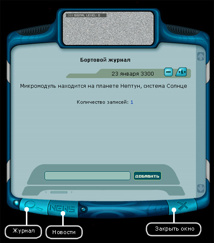
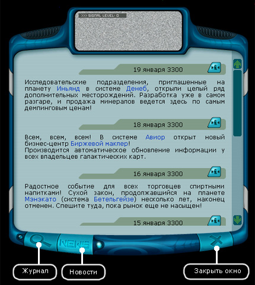

Руководство рейнджера > Бортовой журнал (F1)
|
Руководство рейнджера > Бортовой журнал (F1)
|
| Бортовой журнал (F1) Бортовой журнал позволяет делать собственные записи. Сохранять новости. Чтобы сделать запись: 1. Введите текст в окне. 2. Нажмите кнопку "Добавить".  Совет. Для того чтобы сохранить запись на панели навигации, щелкните по значку Для того чтобы удалить запись из журнала, щелкните по значку Примечание. Для удаления всех записей из журнала нажмите клавиши Ctrl+Delete. Чтобы выгрузить записи из журнала во внешний txt-файл нажмите клавиши Ctrl+Inseret. Нажатие клавишей Shift + Backspace позволяет стирать сразу весь текст в окне ввода текста. Дополнительно при посадке на планету или базу в бортовой журнал закачиваются свежие новости из информационного центра для их дальнейшего просмотра (максимальное количество новостей задается в настройках игры). Чтобы переключиться в режим новостей: • Нажмите на кнопку "NEWS" в нижней части окна.  Примечание. Для удаления всех новостей из журнала, находясь в космосе, незаселенной планете нажмите клавиши Ctrl+Delete. Чтобы переключиться в режим журнала: • Нажмите на кнопку "Лупа" в левой нижней части окна. |